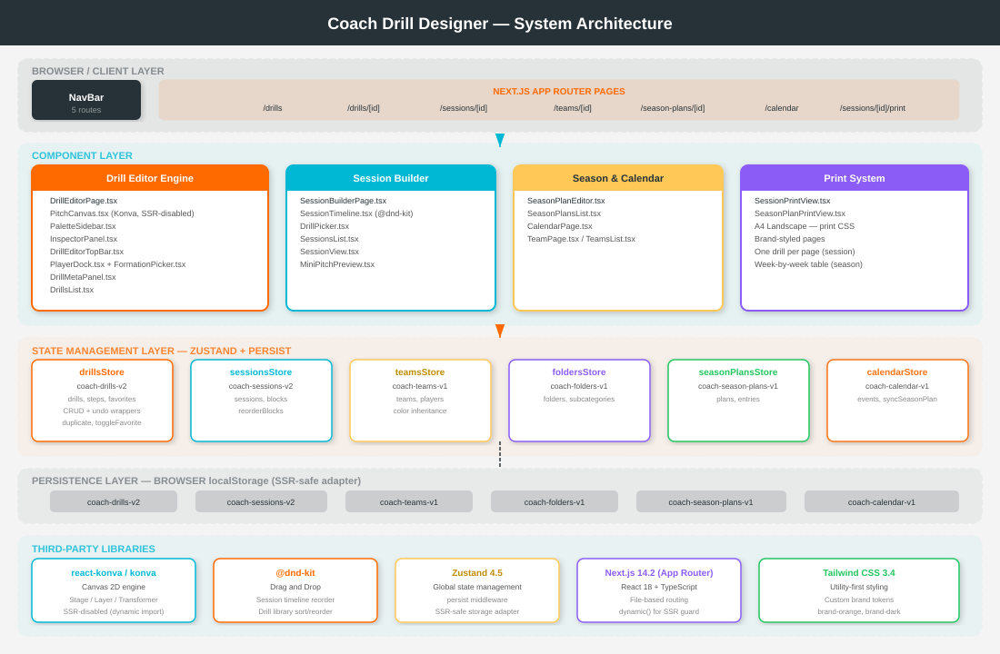
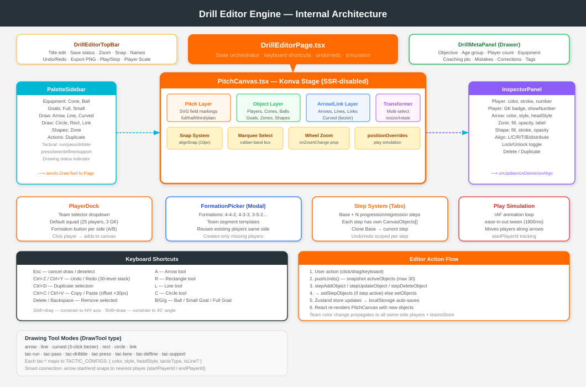
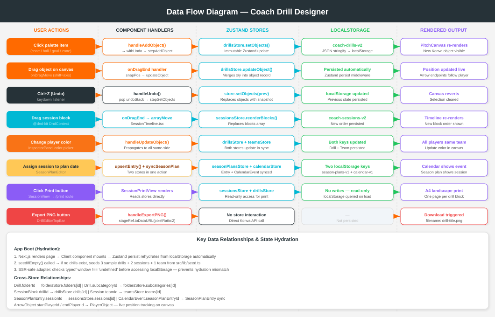

Complete architecture, feature set, data models, editor system & improvement roadmap
Coach Drill Designer is a fully client-side, browser-based football coaching platform built with Next.js 14 (App Router), TypeScript, and React. It enables coaches to visually design training drills on a canvas, build structured training sessions, plan seasonal schedules, and manage teams — all without a backend server or database.
All state is managed through Zustand stores with localStorage persistence, making the application fully offline-capable. The canvas editor is powered by react-konva (Konva.js), a high-performance 2D canvas engine, loaded exclusively on the client side to avoid Next.js SSR conflicts.
Single-Page Application (SPA) with file-based routing via Next.js App Router. No backend. No database. All data lives in localStorage.
Visual drill design with a canvas editor, session planning with drag-and-drop timeline, and a full seasonal planning system — all in one tool.
Phase 10 MVP. Build passes cleanly. Zero TypeScript errors. All features production-ready for local/offline use.
| Metric | Value |
|---|---|
| Framework | Next.js 14.2.5 (App Router) |
| Language | TypeScript 5.5 |
| Canvas Engine | Konva 9.3 via react-konva 18.2 |
| State Management | Zustand 4.5 with persist middleware |
| Drag & Drop | @dnd-kit/core 6.1 + @dnd-kit/sortable 7.0 |
| Styling | Tailwind CSS 3.4 with custom brand tokens |
| localStorage Keys | 6 keys (drills-v2, sessions-v2, teams-v1, folders-v1, season-plans-v1, calendar-v1) |
| Canvas Object Types | 11 (player, cone, ball, goal, arrow, zone, circle, rectangle, line, curved, link) |
| Pages / Routes | 15 routes across 6 modules |
| Undo Stack Depth | 30 levels per step context |
| Default Squad Size | 25 outfield + 3 GK per side |
| Layer | Technology | Version | Purpose |
|---|---|---|---|
| Framework | Next.js App Router | 14.2.5 | File-based routing, React Server Components shell, client components for all interactive UI |
| Language | TypeScript | 5.5.4 | Full type safety across all components, stores, and models |
| Canvas | react-konva / konva | 18.2 / 9.3.14 | 2D canvas rendering for drill diagrams, loaded via dynamic() with ssr:false |
| State | Zustand + persist | 4.5.4 | 6 isolated stores, each with auto-persist to localStorage via middleware |
| Drag & Drop | @dnd-kit | 6.1 / 7.0 | Accessible drag-and-drop for session timeline reordering and drill library sorting |
| Styling | Tailwind CSS | 3.4.6 | Utility-first with brand color tokens (brand-orange, brand-dark) |
| Config | next.config.mjs | — | .mjs format required (Next 14.2 does not support .ts config) |
sessionbuilder/
├── src/
│ ├── app/ # Next.js App Router
│ │ ├── layout.tsx # Root layout — NavBar + page slot
│ │ ├── page.tsx # Redirects → /drills
│ │ ├── drills/
│ │ │ ├── page.tsx # Drill library list
│ │ │ └── [id]/
│ │ │ ├── page.tsx # Drill editor
│ │ │ └── view/page.tsx # Fullscreen drill view
│ │ ├── sessions/
│ │ │ ├── page.tsx # Sessions list
│ │ │ └── [id]/
│ │ │ ├── page.tsx # Session builder
│ │ │ ├── view/page.tsx # Session field view
│ │ │ └── print/page.tsx # Session print preview
│ │ ├── teams/
│ │ │ ├── page.tsx # Teams list
│ │ │ └── [id]/page.tsx # Team editor
│ │ ├── season-plans/
│ │ │ ├── page.tsx # Season plans list
│ │ │ └── [id]/
│ │ │ ├── page.tsx # Season plan editor
│ │ │ └── view/page.tsx # Season plan view/print
│ │ └── calendar/
│ │ └── page.tsx # Calendar month view
│ │
│ ├── components/
│ │ ├── drill-editor/ # Editor engine (7 components)
│ │ │ ├── DrillEditorPage.tsx # Main orchestrator
│ │ │ ├── PitchCanvas.tsx # Konva canvas (SSR-disabled)
│ │ │ ├── PaletteSidebar.tsx # Left tool palette
│ │ │ ├── InspectorPanel.tsx # Right property inspector
│ │ │ ├── DrillEditorTopBar.tsx # Top toolbar
│ │ │ ├── DrillMetaPanel.tsx # Drill info drawer
│ │ │ ├── PlayerDock.tsx # Bottom player panel
│ │ │ └── FormationPicker.tsx # Formation modal
│ │ ├── session-builder/ # Session builder (3 components)
│ │ │ ├── SessionBuilderPage.tsx
│ │ │ ├── SessionTimeline.tsx
│ │ │ └── DrillPicker.tsx
│ │ ├── season-plans/ # Season planning (3 components)
│ │ │ ├── SeasonPlanEditor.tsx
│ │ │ ├── SeasonPlansList.tsx
│ │ │ └── SeasonPlanPrintView.tsx
│ │ ├── calendar/
│ │ │ └── CalendarPage.tsx
│ │ ├── views/ # Read-only view modes
│ │ │ ├── DrillView.tsx # Fullscreen drill with keyboard nav
│ │ │ ├── SessionView.tsx # Session field view
│ │ │ └── SessionPrintView.tsx # Print-ready session layout
│ │ ├── team/
│ │ │ └── TeamPage.tsx
│ │ ├── DrillsList.tsx # Drill library with folders/D&D
│ │ ├── SessionsList.tsx
│ │ ├── TeamsList.tsx
│ │ ├── MiniPitchPreview.tsx # SVG thumbnail of drill canvas
│ │ └── NavBar.tsx # Left sidebar navigation
│ │
│ ├── store/ # Zustand stores
│ │ ├── drillsStore.ts
│ │ ├── sessionsStore.ts
│ │ ├── teamsStore.ts
│ │ ├── foldersStore.ts
│ │ ├── seasonPlansStore.ts
│ │ └── calendarStore.ts
│ │
│ ├── types/
│ │ └── index.ts # All TypeScript types (single source)
│ └── lib/
│ ├── seed.ts # Seed data for first load
│ └── sessionQuality.ts # Session analysis utility
│
├── next.config.mjs
├── tailwind.config.ts
└── package.json| Module | Files | Responsibility |
|---|---|---|
| Editor Engine | drill-editor/ | All drill canvas editing: object creation, selection, snapping, drawing tools, undo/redo, step management, formation placement |
| Session Builder | session-builder/ | Building training sessions from drills: timeline with section groups, intensity setting, drag reorder, session summary |
| Season Planner | season-plans/ | Long-term planning: assign sessions to calendar dates, generate printable weekly plan view |
| Calendar | calendar/ | Month-view calendar of all events (training, match, rest), synced with season plan entries |
| Teams | team/ | Team management: colors, player roster, training days; colors auto-inherit to drill canvas players |
| Print System | views/ | Brand-styled A4 landscape print views for sessions (one drill per page) and season plans (week-by-week table) |
| State Layer | store/ | 6 isolated Zustand stores, each with persist middleware writing to separate localStorage keys |
| Types | types/index.ts | Single source of truth for all TypeScript interfaces and union types |
Every store follows the same pattern: Zustand create() wrapped in persist() middleware with a custom SSR-safe storage adapter that guards all localStorage access behind a typeof window !== 'undefined' check.
| Store | localStorage Key | State Shape | Key Actions |
|---|---|---|---|
drillsStore | coach-drills-v2 | Record<string, Drill> | addDrill, updateDrill, deleteDrill, duplicateDrill, addObject, updateObject, deleteObject, setObjects, addDrillStep, setStepObjects, removeDrillStep, toggleFavorite |
sessionsStore | coach-sessions-v2 | Record<string, Session> | addSession, updateSession, deleteSession, duplicateSession, addBlock, updateBlock, deleteBlock, reorderBlocks |
teamsStore | coach-teams-v1 | Record<string, Team> | addTeam, updateTeam, deleteTeam, addPlayer, updatePlayer, deletePlayer |
foldersStore | coach-folders-v1 | Record<string, DrillFolder> + subcategories | addFolder, updateFolder, deleteFolder (cascades subs), addSubcategory, updateSubcategory, deleteSubcategory |
seasonPlansStore | coach-season-plans-v1 | Record<string, SeasonPlan> | addPlan, updatePlan, deletePlan, upsertEntry, deleteEntry |
calendarStore | coach-calendar-v1 | Record<string, CalendarEvent> | addEvent, updateEvent, deleteEvent, bulkAddEvents, syncSeasonPlanEntry, clearSeasonPlanEntry |
Zustand persist middleware automatically serializes the entire store state to localStorage as JSON on every state mutation. Rehydration happens automatically on first render.
The SSR-safe adapter wraps all access so Next.js server-side rendering never crashes attempting to access window.localStorage.
src/lib/seed.ts provides buildSeedDrills(), buildSeedSessions(), and buildSeedTeams() functions. These are called once via seedIfEmpty() on each page mount — only if the store is empty and _seeded flag is false. This ensures first-time users see populated examples.

Figure 1 — Full system architecture showing browser layer, component layer, state management, persistence, and third-party libraries
The diagram illustrates the layered architecture: the Browser/Client Layer hosts all Next.js pages routed by the App Router. Beneath that, the Component Layer is divided into four functional groups — the Drill Editor Engine, Session Builder, Season & Calendar, and Print System. All components share state through the Zustand State Management Layer which automatically persists to the localStorage Persistence Layer using six isolated keys.

Figure 2 — Internal structure of the Drill Editor Engine showing component relationships, canvas layers, drawing tools, and data flow
DrillEditorPage.tsx is the central orchestrator. It owns all editor state (selected objects, draw tool, undo stack, zoom, step context) and passes handlers down as props. The PitchCanvas is the core rendering engine: it splits rendering into a pitch layer, object layer, arrow/link layer, and transformer layer. Surrounding components (PaletteSidebar, InspectorPanel, PlayerDock, FormationPicker) communicate only through callbacks — they never write to the store directly.

Figure 3 — Data flow for all major user actions: add object, drag/move, undo, session reorder, team color change, season plan, print, and PNG export
Every mutating user action follows the same five-step flow: User Action → Component Handler → Zustand Store mutation → localStorage auto-persist → React re-render. Read-only operations (Print, Export PNG) bypass the store write path entirely. Cross-store operations (e.g. assigning a session to a season plan date) atomically update two stores in one handler.
All types are defined in a single source-of-truth file: src/types/index.ts. Every store and component imports exclusively from this file.
The central entity. A drill is a canvas diagram with rich coaching metadata.
interface Drill {
id: string;
title: string;
description?: string;
pitch: Pitch; // { type, width, height, colors? }
objects: CanvasObject[]; // Base layer objects
// Coaching metadata
objective?: string;
ageGroup?: string;
playerCount?: string;
areaSize?: string;
durationMin?: number;
equipment?: string[];
coachingPoints?: string[];
coachingCues?: string[];
commonMistakes?: string[];
corrections?: string[];
keyConstraints?: string[];
progression?: string;
regression?: string;
notes?: string;
// Organisation
folderId?: string | null;
subcategoryId?: string | null;
sortOrder?: number; // Manual drag-to-reorder position
tags?: string[];
teamId?: string | null;
trainingDay?: string | null;
// Visual
playerScale?: number; // 0.5–2.0, global player size multiplier
// Relationships
parentDrillId?: string | null;
relationType?: 'base'|'variation'|'progression'|'regression' | null;
isFavorite?: boolean;
// Multi-step system
steps?: DrillStep[]; // Progression/regression steps
createdAt: string; // ISO timestamp
updatedAt: string;
}interface DrillStep {
id: string;
label: string; // e.g. "Progression", "Regression", "Step 3"
objects: CanvasObject[]; // Independent object set for this step
}type PitchType = 'full' | 'half' | 'third' | 'plain';
interface Pitch {
type: PitchType;
width: number; // Logical pixels: full=840, half=840, third=840
height: number; // Logical pixels: full=540, half=420, third=300
colors?: {
grass: string;
grassSecondary?: string; // Alternate stripe color
lines: string;
};
}The CanvasObject type is a discriminated union of 11 object types, distinguished by the type field:
type CanvasObject =
| PlayerObject | ConeObject | BallObject | GoalObject
| ArrowObject | ZoneObject | CircleShapeObject | RectangleObject
| LineObject | CurvedLineObject | LinkObject;| Type | Key Fields | Description |
|---|---|---|
'player' | x, y, color, number, name, team ('A'|'B'), showNumber, strokeColor, numberColor, teamColorInherited, rotation, locked | Jersey-style player dot. GK detected by number 1/12/13 → gold fill. teamColorInherited enables auto-sync with team store. |
'cone' | x, y, color, rotation, locked | Training cone placed as a colored triangle/polygon. |
'ball' | x, y, locked | Football (soccer ball), white with black pattern. |
'goal' | x, y, size ('small'|'full'), rotation, locked | Full-size or small/mini goal rendered as a rectangle. |
'arrow' | startX, startY, endX, endY, color, style ('solid'|'dashed'), headStyle ('filled'|'open'), strokeWidth, tacticType?, startPlayerId?, endPlayerId?, locked | 2-point arrow. startPlayerId/endPlayerId enable live tracking: arrow endpoints follow player positions. tacticType assigns football-specific visual style. |
'line' | startX, startY, endX, endY, color, strokeWidth, dashed, tacticType?, locked | Straight line without arrowhead. Used for tactical lines (defensive line, lane). |
'curved' | startX, startY, cpX, cpY, endX, endY, color, strokeWidth, dashed, locked | Quadratic bezier curve. 3-click creation: click start → click end → click control point. |
'zone' | x, y, width, height, fill, opacity (0–1), label, strokeColor, strokeWidth, rotation, locked | Filled rectangular area, used to mark pitch zones or areas of play. |
'circle' | x, y, radius, stroke, strokeWidth, fill, fillOpacity, opacity, dashed, rotation, locked | Circle shape. Center + edge click creation. |
'rectangle' | x, y, width, height, stroke, strokeWidth, fill, fillOpacity, opacity, dashed, rotation, locked | Rectangle shape. Corner-to-corner click creation. |
'link' | fromPlayerId, toPlayerId, color, dashed, label, locked | Dynamic line connecting two players by ID. Renders as a line between live player positions. |
type TacticType = 'run' | 'pass' | 'dribble' | 'press' | 'lane' | 'defline' | 'support';| Tactic | Color | Style | Head | Object Type |
|---|---|---|---|---|
| run | #fbbf24 (amber) | solid | filled | arrow |
| pass | #ffffff | dashed | open | arrow |
| dribble | #f97316 (orange) | solid | filled | arrow |
| press | #ef4444 (red) | dashed | filled | arrow |
| support | #22c55e (green) | dashed | open | arrow |
| lane | #3b82f6 (blue) | dashed | open | line |
| defline | #8b5cf6 (purple) | solid | open | line |
type Intensity = 'low' | 'mid' | 'high';
type SessionSection = 'warmup' | 'main' | 'game' | 'cooldown';
interface SessionBlock {
id: string;
drillId: string; // References Drill.id
durationMin: number;
intensity: Intensity;
notes?: string;
section?: SessionSection; // Which phase of the session
}
interface Session {
id: string;
title: string;
date?: string;
blocks: SessionBlock[]; // Ordered array of drill blocks
objective?: string;
ageGroup?: string;
playerCount?: string;
notes?: string;
teamId?: string | null;
trainingDay?: string | null;
createdAt: string;
updatedAt: string;
}interface TeamPlayer {
id: string;
name: string;
number?: string;
position?: string;
color?: string;
teamSide: 'home' | 'opponent';
}
interface Team {
id: string;
name: string;
ageGroup: string;
primaryColor: string; // Home jersey color
secondaryColor: string;
opponentPrimaryColor: string; // Away jersey color
opponentSecondaryColor?: string;
primaryStrokeColor?: string; // Jersey ring color — home
opponentStrokeColor?: string; // Jersey ring color — away
primaryNumberColor?: string; // Number text color — home
opponentNumberColor?: string; // Number text color — away
trainingDays: string[]; // ["Sunday","Tuesday","Thursday"]
players: TeamPlayer[];
createdAt: string;
updatedAt: string;
}interface DrillFolder {
id: string; name: string; createdAt: string; updatedAt: string;
}
interface FolderSubcategory {
id: string;
folderId: string; // Parent folder reference
name: string;
createdAt: string;
updatedAt: string;
}foldersStore.deleteFolder(). Drills that were in the folder keep their folderId value but the folder is gone — they become "unfoldered".interface SeasonPlanEntry {
id: string;
date: string; // ISO date string
trainingDay?: string;
sessionId?: string; // Linked session
notes?: string;
}
interface SeasonPlan {
id: string;
title: string;
teamId: string; // Linked team
startDate: string;
endDate: string;
entries: SeasonPlanEntry[];
createdAt: string;
updatedAt: string;
}type CalendarEventType = 'training' | 'match' | 'rest' | 'other';
type CalendarEventStatus = 'planned' | 'completed' | 'cancelled';
interface CalendarEvent {
id: string;
title: string;
date: string;
type: CalendarEventType;
teamId?: string;
sessionId?: string;
notes?: string;
status?: CalendarEventStatus;
seasonPlanEntryId?: string; // Links to SeasonPlanEntry for sync
}calendarStore.syncSeasonPlanEntry() creates or updates a corresponding CalendarEvent automatically, keeping the calendar in sync with the season plan.| Route | Component | Purpose |
|---|---|---|
/ | page.tsx | Instant redirect to /drills |
/drills | DrillsList.tsx | Full drill library with folders, subcategories, favorites, search, drag-to-reorder, 2-step new drill modal with 8 templates |
/drills/[id] | DrillEditorPage.tsx | Full canvas editor with all drawing tools, inspector, player dock, step tabs, simulation |
/drills/[id]/view | DrillView.tsx | Fullscreen presentation mode; keyboard shortcuts: F=fullscreen, ←→=prev/next drill navigation |
/sessions | SessionsList.tsx | Session cards with duration/intensity summary, mini previews, create/duplicate/delete |
/sessions/[id] | SessionBuilderPage.tsx | Session builder with timeline, drill picker, section headers, session quality analysis |
/sessions/[id]/view | SessionView.tsx | Read-only session view with drill progression, print button |
/sessions/[id]/print | SessionPrintView.tsx | Brand-styled print layout: cover page + one A4 landscape page per drill block |
/teams | TeamsList.tsx | Team cards, create new team |
/teams/[id] | TeamPage.tsx | Team editor: colors, roster management, training days configuration |
/season-plans | SeasonPlansList.tsx | Season plan cards, create new plan |
/season-plans/[id] | SeasonPlanEditor.tsx | Weekly grid: assign sessions to dates, auto-syncs to calendar |
/season-plans/[id]/view | SeasonPlanPrintView.tsx | Week-by-week table with drill thumbnails, brand styled, printable |
/calendar | CalendarPage.tsx | Month-view calendar with event types (training/match/rest/other), status tracking |
The drill library (DrillsList.tsx) is the main hub for managing all drills. It provides:
A 2-step creation modal: first choose a template, then set the pitch type.
| Template | Description |
|---|---|
| Blank | Empty canvas, user starts from scratch |
| Rondo | Possession circle exercise template |
| Possession | Keep-ball drill setup |
| Build-up | Playing out from the back |
| Finishing | Shooting / finishing exercise |
| Pressing | High press / gegenpressing setup |
| Transition | Attack/defense transition drill |
| SSG | Small-sided game setup |
Folders are top-level organisational containers. Each folder can have subcategories — child groupings within the folder. Drills store both folderId and subcategoryId fields. Deleting a folder cascades to delete all its subcategories.
Drill cards within a folder/subcategory are sortable using @dnd-kit/sortable. Each card uses the useSortable hook. Drag end triggers a sortOrder update in the drills store. Drill cards can also be dragged between folders/subcategories.
Any drill can be starred via the star icon on the card or the toggleFavorite store action. Starred drills appear in a dedicated Favorites section at the top of the library regardless of their folder assignment.
The editor engine is implemented across the src/components/drill-editor/ directory. DrillEditorPage.tsx is the orchestrator that owns all state. PitchCanvas.tsx is the Konva canvas renderer, loaded via dynamic() with ssr: false to prevent server-side rendering conflicts.
PitchCanvas.tsx renders a Konva Stage containing multiple Layers in a defined z-order. All objects are rendered as Konva nodes (Rect, Circle, Arrow, Line, Path, Text, Group).
| Layer (top → bottom) | Contents |
|---|---|
| Transformer Layer | Konva Transformer node for resize/rotate handles on selected objects |
| Link/Arrow Layer | ArrowObject, LineObject, CurvedLineObject (rendered below players so they appear "under" player tokens) |
| Object Layer | PlayerObject, ConeObject, BallObject, GoalObject, ZoneObject, CircleShapeObject, RectangleObject |
| Pitch Layer | Field markings (grass rectangles, white lines, penalty areas, circles, arcs) rendered from pitch.type |
The Stage handles mouse events for drawing tools (onMouseDown, onMouseMove, onMouseUp) and zoom (onWheel). Drag events on individual nodes are handled per-object for position updates.
The active drawing tool is stored as DrawTool in DrillEditorPage state. All tool buttons in PaletteSidebar and all keyboard shortcuts toggle this value.
| Tool | Clicks Required | Object Created | Keyboard |
|---|---|---|---|
| arrow | 2 (start → end) | ArrowObject (red, solid, filled) | A |
| line | 2 (start → end) | LineObject (white) | L |
| curved | 3 (start → end → control point) | CurvedLineObject (bezier) | — |
| rect | 2 (corner → opposite corner) | RectangleObject | R |
| circle | 2 (center → edge) | CircleShapeObject | C |
| link | 2 (player A → player B) | LinkObject | — |
| tac-run | 2 | ArrowObject (amber, solid) | — |
| tac-pass | 2 | ArrowObject (white, dashed, open) | — |
| tac-dribble | 2 | ArrowObject (orange, solid) | — |
| tac-press | 2 | ArrowObject (red, dashed) | — |
| tac-support | 2 | ArrowObject (green, dashed, open) | — |
| tac-lane | 2 | LineObject (blue, dashed) | — |
| tac-defline | 2 | LineObject (purple, solid) | — |
drawFirstPoint (start). Click 2 sets drawSecondPoint (end). Click 3's position becomes the bezier control point (cpX, cpY). The CurvedLineObject is then created and added to the store.
When drawing an arrow or tactical arrow tool and the first click lands on a PlayerObject, the player's ID is stored as arrowStartPlayerId. If the second click also lands on a player, that player's ID is stored as endPlayerId. The resulting ArrowObject has startPlayerId and/or endPlayerId set. PitchCanvas reads these IDs on every render and substitutes the live player position for the arrow endpoints — so the arrow follows the player when they are dragged.
Clicking any object calls handleSelect(id): sets selectedId and selectedIds = [id]. Clicking empty canvas deselects.
Shift+click on any object calls handleMultiSelect(id) using a ref (selectedIdsRef) to avoid stale closure: toggles the object in selectedIds. The last selected becomes selectedId (shown in inspector).
Drag on empty canvas to draw a selection rectangle. All objects whose centers fall within the rectangle are collected and passed to handleMarqueeSelect(ids, additive). Additive (Shift held) merges with existing selection.
Alignment snap is always active when snapToGrid is true. During onDragMove, the system scans all other objects and computes candidate snap targets: their x/y positions, midpoints, and edges. If the dragged object's position is within 10 pitch pixels of any snap target, it snaps to that coordinate. Visual guide lines are drawn on the canvas during drag.
The Inspector Align toolbar provides manual alignment: Left, Center-X, Right, Top, Center-Y, Bottom, Distribute-H, Distribute-V. These operate on all selectedIds (minimum 2 objects).
The undo system is a client-side snapshot stack. Before any mutating operation, pushUndo() takes a copy of the current activeObjects array and pushes it onto undoStack (capped at 30 entries, oldest discarded). The redo stack is cleared on any new action. Both stacks are scoped to the active step — switching steps clears both stacks.
// Undo: pop previous state, push current to redo stack
handleUndo() → undoStack.pop() → stepSetObjects(prev) → redoStack.push(current)
// Redo: pop from redo stack, push current to undo stack
handleRedo() → redoStack.pop() → stepSetObjects(next) → undoStack.push(current)| Action | Shortcut | Behaviour |
|---|---|---|
| Copy | Ctrl+C | Copies selected objects (all selectedIds or selectedId) to clipboardItems state — no store write |
| Paste | Ctrl+V | Creates new objects from clipboard with new UUIDs, offset +30px on x/y. Arrow player connections are stripped (independent copy). Selects new objects. |
| Duplicate | Ctrl+D or palette button | Same as copy+paste but immediate, offset +10px. Works on multi-select. |
The step tab bar lives between the toolbar and the canvas. The Base tab always shows drill.objects. Each additional step shows its own DrillStep.objects. Adding a step auto-clones all Base objects into the new step. Clone base button (only in step mode) overwrites the current step's objects with fresh copies from Base.
All store operations are routed through step-aware wrappers: stepAddObject, stepUpdateObject, stepDeleteObject, stepSetObjects. These check activeStepId and call either setStepObjects(drillId, stepId, objects) or the direct store action based on context.
The Play button becomes active when any ArrowObject with startPlayerId exists. On play:
startPlayerId, reads the current player position and arrow end position as movement targets.t < 0.5 ? 2t² : -1+(4-2t)t.positionOverrides state on every frame — a Record<playerId, {x,y}> map.Bottom panel showing all players for both teams (or default squad of 25+3 GK per side). Team selector dropdown at top. Clicking a player adds it to canvas center. Formation buttons per side open the Formation Picker.
Players with teamColorInherited: true auto-sync color when the linked team's color changes. Manually changing a player's color in the inspector sets teamColorInherited: false and also propagates to all same-side players + updates the team store.
Players with number 1, 12, or 13 are automatically treated as goalkeepers. The Inspector Panel shows a GK badge and Konva renders them with a gold fill instead of their team color.
A modal component with a formation list (4-4-2, 4-3-3, 3-5-2, and team segment templates like back-4, mid-3, front-3). Formations use landscape percentage coordinates [lateral_pct, depth_pct] that are scaled to the current pitch dimensions. When placing a formation, the system reuses existing players on the same side (repositions them), creating only the missing ones — preventing duplicate players from accumulating.
| Object Type | Inspector Controls |
|---|---|
| Player | Fill color, stroke color, number color, number text, name, GK badge, show/hide number toggle, lock toggle, delete, duplicate |
| Arrow | Color, line style (solid/dashed), head style (filled/open), stroke width, lock toggle |
| Zone | Fill color, opacity slider (0–1), label text, stroke color, stroke width, lock toggle |
| Circle | Stroke color, stroke width, fill color, fill opacity, overall opacity slider, dashed toggle, lock toggle |
| Rectangle | Stroke color, stroke width, fill color, fill opacity, overall opacity slider, dashed toggle, lock toggle |
| Cone | Fill color, lock toggle |
| Line/Link | Color, stroke width, dashed toggle, lock toggle |
| Multi-select (2+) | Alignment toolbar: left, center-X, right, top, center-Y, bottom, distribute-H, distribute-V |
| Key | Action |
|---|---|
| Esc | Cancel active draw tool, clear first point, deselect |
| Ctrl+Z | Undo (30-level stack, scoped per step) |
| Ctrl+Y / Ctrl+Shift+Z | Redo |
| Ctrl+D | Duplicate selected objects (+10px offset) |
| Ctrl+C | Copy selected objects to clipboard |
| Ctrl+V | Paste clipboard (+30px offset) |
| Delete / Backspace | Delete selected objects (when not in text input) |
| A | Activate Arrow tool |
| R | Activate Rectangle tool |
| L | Activate Line tool |
| C | Activate Circle tool |
| B | Place Ball at canvas center (with ±20px jitter) |
| g (lowercase) | Place Small Goal at canvas center |
| G (uppercase) | Place Full Goal at canvas center |
| D (with arrow selected) | Toggle arrow style solid ↔ dashed |
| Shift+drag object | Constrain movement to horizontal or vertical axis |
| Shift+draw | Constrain drawn line to 45° angle increments |
| Mouse wheel | Zoom canvas in/out |
A slide-out drawer (right side) for non-canvas drill metadata:
The session timeline (SessionTimeline.tsx) displays all blocks in a vertical chronological list. Blocks are grouped by SessionSection: Warm-up, Main, Game, Cool-down. Each section has a coloured header (sky, orange, amber, violet) with an icon and total duration.
The timeline uses @dnd-kit: each BlockCard is wrapped in useSortable() from @dnd-kit/sortable. The outer list is wrapped in DndContext with closestCenter collision detection. Drag end fires arrayMove() and calls reorderBlocks(sessionId, newBlocks) on the sessions store.
Each block card shows:
| Intensity | Color | Badge Style |
|---|---|---|
| Low | sky-400 (#38bdf8) | sky-50 bg, sky-200 border |
| Mid | amber-400 (#fbbf24) | amber-50 bg, amber-200 border |
| High | red-400 (#f87171) | red-50 bg, red-200 border |
The session builder right panel shows a live summary:
src/lib/sessionQuality.tsDrillPicker.tsx is a modal/panel that lists all available drills with search and folder filter. Selecting a drill creates a new SessionBlock with a default 15-minute duration and mid intensity, appended to the session's blocks array.
The Season Planner (SeasonPlanEditor.tsx) provides a long-term training calendar for a team. A plan spans a date range (start → end) and belongs to one team. It renders as a week-by-week grid where each training day cell can have a session assigned.
Clicking a date cell opens a session picker. Selecting a session calls seasonPlansStore.upsertEntry() to save the assignment, and simultaneously calls calendarStore.syncSeasonPlanEntry() to create or update a CalendarEvent linked via seasonPlanEntryId. This two-store sync keeps the Calendar view automatically up to date.
The SeasonPlanPrintView.tsx component renders a week-by-week table:
MiniPitchPreview thumbnail of the first drill in that sessionSession intensity is derived by sessionIntensity(session): averages block intensities (low=1, mid=2, high=3) and rounds to nearest level.
CalendarPage.tsx renders a full month grid calendar. Days with events show event chips coloured by type:
| Event Type | Display |
|---|---|
| training | Brand orange chip |
| match | Red chip |
| rest | Gray chip |
| other | Accent chip |
Each event has a CalendarEventStatus: 'planned', 'completed', or 'cancelled'. This can be changed directly in the calendar view. Cancelled events render with a strikethrough.
Events created from season plan entries carry a seasonPlanEntryId field. The calendarStore.syncSeasonPlanEntry() method performs an upsert: it searches for an existing event with the same seasonPlanEntryId and updates it, or creates a new one. clearSeasonPlanEntry() deletes the linked event when a season plan entry is removed.
TeamPage.tsx allows full configuration of a team. Each team stores:
When a drill has teamId set to a team, the editor monitors the team's color keys via a useEffect. Any player with teamColorInherited: true gets automatically updated to match the team's current primary/stroke/number colors whenever those change. This means changing team colors in the Teams module reflects live in all linked drills.
Route: /sessions/[id]/print → SessionPrintView.tsx
The session print view generates a branded A4 landscape document with one cover page followed by one page per session block. All print layout is controlled via a <style> tag with @media print rules injected directly into the component.
| Page | Content |
|---|---|
Cover Page (.cover-print-page) | Session title, team name, date, total duration, block count, section breakdown table (warmup/main/game/cooldown with durations and intensity counts), brand header bar in #FF6A00 |
Each Drill Page (.drill-print-page) | Page header with session title, drill number/total; left column: drill name, duration, intensity badge, section phase badge, coaching points list, notes; right column: large MiniPitchPreview diagram (SVG), drill metadata (age group, player count, equipment) |
/* Print CSS rules */
@media print {
@page { size: A4 landscape; margin: 10mm 12mm; }
.session-print-toolbar { display: none !important; }
.drill-print-page {
page-break-before: always;
break-inside: avoid;
}
.cover-print-page { page-break-before: avoid; }
}.session-print-toolbar class hides the Print / Back buttons when actually printing. The NavBar is hidden globally via a .no-print class applied in globals.css. This ensures a clean output with only the content pages.
Route: /season-plans/[id]/view → SeasonPlanPrintView.tsx
Renders a week-by-week training table designed for season overview printing. Weeks run Sunday-to-Saturday. Each week row spans the full page width. Cells show assigned sessions with drill thumbnail previews.
| Element | Design |
|---|---|
| Document header | Team name, plan title, date range — background: #263238, text: white |
| Week header rows | Background: #FF6A00, white text, week number + date range |
| Training day cells | White background, session title, intensity badge, MiniPitchPreview SVG thumbnail |
| Empty day cells | Light gray (#F4F4F4) background, centered dash |
| Intensity badges | Low: blue (#dbeafe), Mid: amber (#fef3c7), High: red (#fee2e2) |
MiniPitchPreview.tsx renders a pure SVG representation of a drill's canvas objects — no Konva dependency. It is used in SessionTimeline block cards, DrillsList cards, and both print views.
<path> with cubic bezier). Link objects are rendered as a line between player positions.
Colors are registered as Tailwind custom tokens in tailwind.config.ts:
// tailwind.config.ts
theme: {
extend: {
colors: {
'brand-orange': '#FF6A00',
'brand-dark': '#263238',
}
}
}The root layout (app/layout.tsx) renders a full-height flex row: NavBar (fixed left sidebar, 240px wide, #263238 background) + main content area (flex-1, fills remaining width). The editor page adds a further horizontal split: PaletteSidebar (208px) + Canvas + InspectorPanel (288px).
| Zone | Width | Background | Purpose |
|---|---|---|---|
| NavBar (left sidebar) | 240px fixed | #263238 | Global navigation: Drills, Sessions, Teams, Season Plans, Calendar |
| PaletteSidebar | 208px fixed | gray-900 | Tool palette for draw tools, equipment, shapes |
| Canvas area | flex-1 (remaining) | #1a1a2e (dark) | Konva Stage: pitch + objects |
| InspectorPanel | 288px fixed | gray-900 | Property inspector for selected objects |
| Player Dock | full width, collapsible | gray-900 | Player avatars + formation buttons |
| Session list pages | full width | #F4F4F4 | White cards on light gray background |
The editor uses a dark UI: bg-gray-900 panels, bg-gray-800 inputs, emerald-500 active states, amber-500 draw-active states. All text uses white/gray variants.
Session Builder, DrillsList, SessionsList use a light theme: white cards (bg-white) on #F4F4F4, slate-200 borders, brand-orange accents, shadow-card utility class.
The NavBar (NavBar.tsx) is a fixed left sidebar with:
bg-brand-orange/20 text-brand-orangetext-white/60 hover:text-white hover:bg-white/10.no-print classstageRef.findOne() for live updates which can be expensive on complex canvases.src/lib/sessionQuality.ts exists but the analysis logic is basic. There are no AI-driven insights, no intensity curve visualisation, and no warm-up/cool-down time recommendations based on session load.subscribeWithSelector for optimistic UI.node.cache()) for static pitch layer. Consider a WebGL renderer (Pixi.js) for very large formation diagrams or animation-heavy simulations.MediaRecorder API with canvas captureStream(). Coaches could share animated drill previews directly to messaging platforms. Add multi-step sequential animation (play step 1, then step 2 automatically).